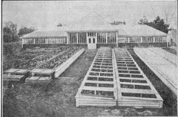
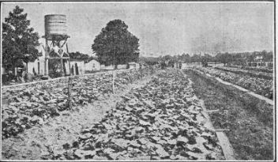

166. The Frame
Description
This section is from the book "Vegetable Gardening", by Ralph L. Watts. Also available from Amazon: Vegetable Gardening.
166. The Frame
Cold frames are less expensive to make than hotbeds. Their construction is more economical in three particulars: (1) Excavation is not necessary when vegetable plants are grown. (2) Heating material is not needed. (3) The frame itself requires less material.
Many of the points made in considering the frame and sash for hotbeds apply equally well to cold frames. As cold frames are placed on top of the ground, the sides do not need to be so high as for hotbeds, unless the hotbed frame is simply placed on top of the manure, in which case there would be no difference in this respect. The height of the sides, or, in other words, the depth of the frame, must be determined by the size of the plants to be grown. It takes a deeper frame to grow tomato plants than to mature a crop of forcing radishes. Ordinarily, a 12-inch board or plank is high enough for the north side and a 6-inch piece for the south side. An additional depth of 2 to 4 inches is an advantage in some lines of work. If flats or plant boxes are to be used in growing cabbage and tomato plants, the frame at the north side should be 16 inches deep and at the south side 10 inches.
Fig. 24. permanent cold frames.
The frames may be movable or stationary. The most common plan is to nail the side boards, which should be not less than inches thick, to stakes placed on the outside. Chestnut lumber, i^-inch thick, makes very satisfactory material for this purpose. The end boards, held in place by cleats or other devices, may be removed and the soil of the frame cultivated in the manner shown in Figures 22 and 23. The crossbars should be dovetailed in the side boards so they can be removed quickly.
While portable frames are often used, they are not popular with extensive commercial growers. Portable frames may be dovetailed at the corners or held together by rods and bolts. They are usually made to accommodate either two or four 3 x 6-foot sash. A double frame in use at the Missouri Experiment Station is shown in Figure 24. The outside of frames when used in cold weather should be banked with soil, manure or sod. An excellent plan is to bank with soil and then sow grass seed on the slope, unless the alleys are to be cultivated during the summer.
Fig. 25. cucumbers in cold frame plat near norfolk, virginia.
167. Soil Of The Cold Frames
When the frames are used only in starting plants in flats, the character of the soil is not considered. If used without flats, the greatest care should be exercised in preparing the proper soil. Unless the subsoil is brought to the surface, the land maybe treated as for any other intensive garden work. Figure 25 shows plats of frame cucumbers at Norfolk, Va., with the side boards removed. The wide alleys will soon be completely covered with the cucumber vines.
Continue to:
Tags
plants, crops, gardening, cultivated, harvesting, food ,greenhouses, fertiliser, vegitables